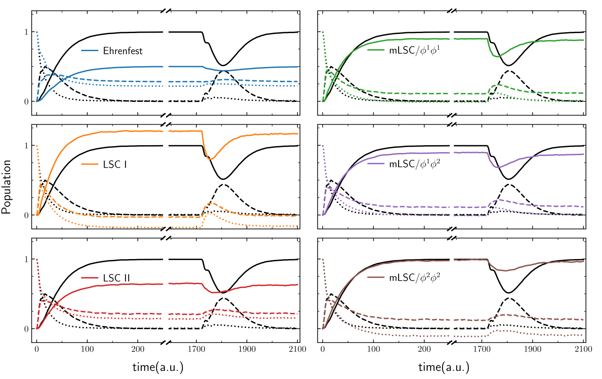

Accurate and cost-effective cavity-modified quantum dynamics from classical-like trajectories
Maximilian Saller, Yifan Lai, Eitan Geva

Cavity

Ebbesen et al., Phys. Rev. Lett., 106, 196405 (2011)
Ebbesen et al., Phys. Rev. Lett., 106, 196405 (2011)
Ebbesen et al., Angw. Chem., 51, 1592-1596 (2012)
Ebbesen et al., Phys. Rev. Lett., 106, 196405 (2011)
Ebbesen et al., Angw. Chem., 51, 1592-1596 (2012)
Ebbesen et al., Chem. Phys. Chem., 14, 125-131 (2013)
Ebbesen et al., Phys. Rev. Lett., 106, 196405 (2011)
Ebbesen et al., Angw. Chem., 51, 1592-1596 (2012)
Ebbesen et al., Chem. Phys. Chem., 14, 125-131 (2013)
Ebbesen et al., Acc. Chem. Res., 49, 2403-2412 (2016)
Ebbesen et al., Phys. Rev. Lett., 106, 196405 (2011)
Ebbesen et al., Angw. Chem., 51, 1592-1596 (2012)
Ebbesen et al., Chem. Phys. Chem., 14, 125-131 (2013)
Ebbesen et al., Acc. Chem. Res., 49, 2403-2412 (2016)
Ebbesen et al., Science, 363, 615-619 (2019)
Trajectories
Some Mapping methods you may have heard of
Mean Field (Ehrenfest)
PBME (LSC I) LSC-IVR (LSC II)
mLSC Windowing (SQC)
Spin Mapping
FBTS PLDM
MACS, A. Kelly and J. Richardson, J. Chem. Phys., 150, 071101 (2019)
MACS, A. Kelly and J. Richardson, Farad. Discus., 221, 150-167 (2020)
Quantum Dynamics
Simple Matter - Hard Cavity
Simple Matter - Hard Cavity
+
a 3-level version
Simple Matter - Hard Cavity
Simple Matter - Hard Cavity
2-level system
MACS, A. Kelly and E. Geva, J. Chem. Phys. Lett., 12, 3163-3170 (2021)
Simple Matter - Hard Cavity
3-level system
MACS, A. Kelly and E. Geva, J. Chem. Phys. Lett., 12, 3163-3170 (2021)
Hard Matter - Simple Cavity
Hard Matter - Simple Cavity
Hard Matter - Simple Cavity
Hard Matter - Simple Cavity
Hard Matter - Simple Cavity
LSC + FGR can give exact results
MACS, Y. Lai and E. Geva, J. Chem. Phys. Lett., 13, 2330-2337 (2022)
Take home message
Classical-like trajectories can yield accurate results for cavity-modified quantum dynamics.
Since they scale linearly with system size they can access large, complex and multiple molecules and multiple cavity modes.
"Accurate and cost-effective cavity-modified quantum dynamics from classical-like trajectories"
Thanks
Prof. Eitan Geva
[Dr] Yifan Lai
Prof. Jeremy Richardson (ETH Zurich)
Dr Aaron Kelly
(MPI Hamburg)